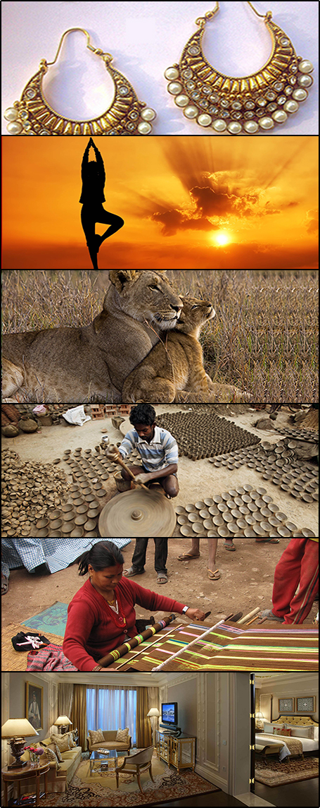

Signature Journeys
Signature Tours
- SIGNATURE TOUR TF-1
Destinations : Delhi - Neemrana - Samode - Agra - (Orchha) Khajuraho - Panna - Varanasi - Delhi (or onwards to Nepal)
- SIGNATURE TOUR TF-2
Destinations: Delhi - Pushkar - Samode - Jaipur - Mandawa - Bikaner - Jaisalmer - Jodhpur - Delhi
- SIGNATURE TOUR TF-3
Destinations : Mumbai - Udaipur - Sardargarh - Jodhpur - Delhi
- SIGNATURE TOUR TF-4
Destinations : Delhi - Agra - Jaisalmer (via Jodhpur) - Goa (via Mumbai) - Kerala
- SIGNATURE TOUR TF-5
Destinations: Chennai - Pondicherry - Bangalore - Coorg - Bandipur - Wyanad - Calicut - Mumbai (via Calicut*) *Calicut has an international airport, from where some international connections can be made directly.
- SIGNATURE TOUR TF-6
Destinations: Delhi - Kaziranga National Park - Darjeeling - Delhi (Optional addition: Nepal or Bhutan 5 day supplements to be asked for separately. Details for Nepal can be found in TF -1)
- SIGNATURE TOUR TF-7
Destinations: Delhi - Agra - Bhopal - Maheshwar - Mandu - Delhi
- SIGNATURE TOUR TF-8
Destinations: Delhi - Ananda in the Himalayas - Jim Corbett National Park - Binsar - Delhi
- SIGNATURE TOUR TF-9
Destinations: Delhi - Agra - Ahmedabad - Morbi - Hodka Village - Rajkot - Sasan Gir - Diu - Mumbai
- SIGNATURE TOUR TF-10
Destinations: Colombo - Kandy - Nuwara Eliya - Galle - Colombo

Our Signature journeys are just those - a selection of our leisure tours that have been most appreciated, and most traveled, and have actually been designed at the time of travel for our guests. These are but a suggestion of the whole offering, a kind of trailor before the whole movie. So, though they cover most of India visual and cultural panorama, there still scope for lots new - just ask us for more suggestions, and you'll want to do all of them together! Our tours are not classified under any stereotype - no tour has a single theme. The tours themselves are much like the Indian Subcontinent : varied, multi-hued, full of different spices in a single dish, and each unlike the other. So every single Travelfinesse journey showcases the area of travel in all its splendor - and is the least to say, exotic. Our journeys are tailor made for our guests according to individual expectations, appetites for adventure, and budget, and are necessarily with character. In a single itinerary where a rickshaw ride may be recommended for everyone within a local market just to savour the experience, choices will be on hand to undertake inter-city travel by road, or a commercial airline, or even by a privately chartered jet! Our hand crafted guest itineraries are much appreciated for the unique experiences on offer, eye for detail, visual content and sometimes just the animated description. We keep our group sizes small - they are capped at 8 adults, and accompanying children are also allowed in.